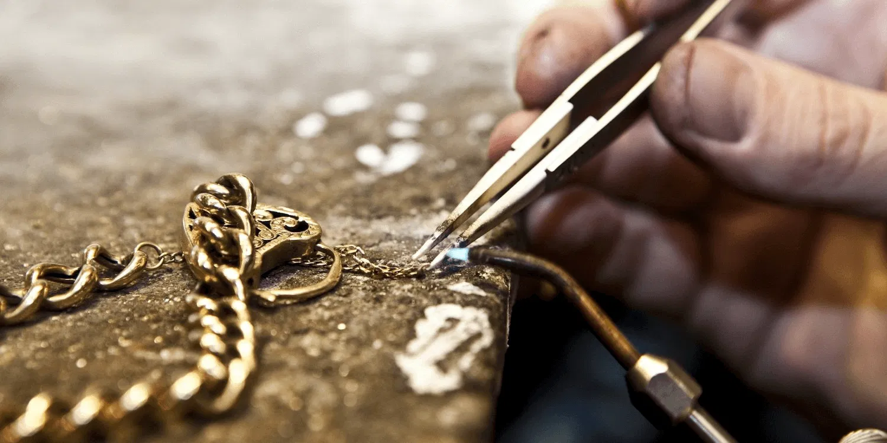

Our services
At JulietRose Jewellers, we take pride in offering a full spectrum of professional jewelry services tailored to meet your needs, whether you’re preserving a precious memory or designing a new keepsake from scratch. Our commitment to quality craftsmanship, transparency, and personal connection has earned the trust of our community and the loyalty of returning clients throughout the Niagara Region.
Custom Jewelry Design
From engagement rings and anniversary gifts to redesigning heirlooms, our custom design process brings your vision to life. Using your ideas—or starting from scratch—we’ll collaborate closely with you to create one-of-a-kind pieces that reflect your style and sentiment. Clients often comment on how owner Sam listens attentively, offering thoughtful suggestions while ensuring every detail aligns with your goals.

Jewelry Repair & Restoration
Whether it’s a snapped chain, a missing stone, or a piece worn by time, our expert repair service restores your jewelry’s beauty and integrity. We treat every item with care, recognizing the emotional and monetary value it holds. Many clients report being amazed at how their cherished rings or necklaces look brand new after a visit to JulietRose.
Watch Repair & Battery Replacement
Our on-site watch technician handles everything from battery replacement and strap adjustments to full overhauls of mechanical and quartz watches. We service most major brands and always aim for quick turnaround times without compromising quality.

Hand Engraving & Personalized Name Plates
Add a personal touch with custom engraving. Whether it's a message inside a wedding band or a name plate for a special occasion, our precision engraving service ensures each piece feels meaningful and truly yours.
Polishing, Rhodium Plating & Resizing
Bring your jewelry back to its original brilliance. Our polishing services remove dullness and minor scratches, while rhodium plating restores the shine of white gold pieces. Ring resizing is available for most types and settings, with expert care taken to preserve structural integrity and comfort.

Gold Buying Services
We offer competitive rates for your unwanted or broken gold items. Our team provides honest, no-pressure evaluations in-store, and many customers have noted that our offers are among the fairest in the area. Whether you're selling scrap gold or old pieces with no sentimental value, we make the process simple and respectful.